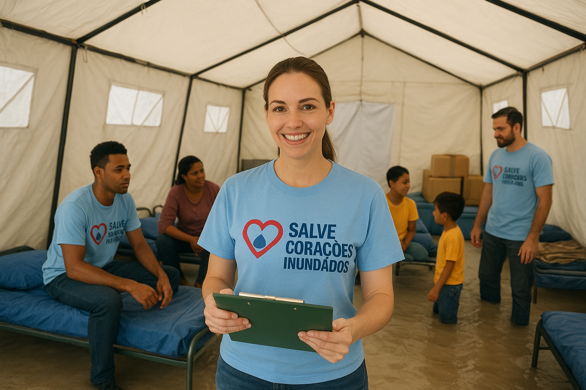
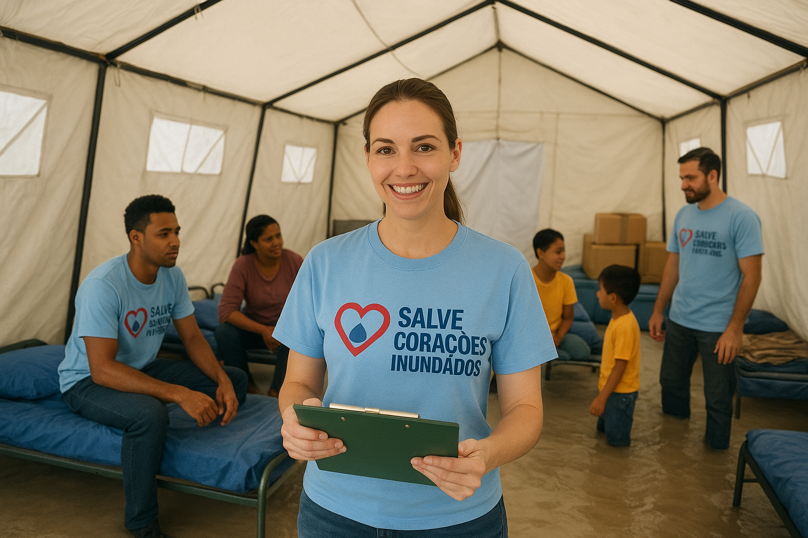

Ação: Abrigo Emergencial
Instalação de abrigos temporários e distribuição de kits de primeiros socorros e higiene.
Como ajudar
- Doações financeiras
- Doações de itens (mantas, kits de higiene)
- Voluntariado local
Instalação de abrigos temporários e distribuição de kits de primeiros socorros e higiene.
Projetos de apoio cultural e reconstrução com participação das lideranças locais.
Para realizar doações, acesse a página de cadastro e escolha a opção desejada.